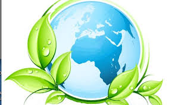

DIA INTERNACIONAL DE LA MADRE TIERRA 22 ABRIL


- 


Realizado por
Andrea Vazquez Dominguez
4to. "G"
Especialidad
Programacion
Submodulo
Desarrolla Aplicaciones moviles
Docente
Lic.Jose Antonio Gómez Hernández
planeta
4to. "G"
Programacion
Desarrolla Aplicaciones moviles
Lic.Jose Antonio Gómez Hernández
Mediante la resolución A/RES/63/278, la Asamblea General de la Organización Internacional de las Naciones Unidas designó al 22 de abril como Día Internacional de la Madre Tierra. No obstante, el primer Día de la Tierra se celebró el mismo 22 de abril pero de 1970 en Estados Unidos tras la inciativa del entonces senador Gaylord Nelson. El primer efecto inmediato de esta celebración acabó en la creación de la Environmental Protection Agency (Agencia de Protección Ambiental). La elección de la fecha tiene que ver con la actividad escolar en los Estados Unidos, ya que no coincide con los períodos ordinarios de pruebas y exámenes, tanto a nivel de educación primaria y secundaria como universitaria.

La preocupación explícita por nuestro entorno y, en general, el medio ambiente, se ha popularizado solo en las últimas décadas, en buena medida porque los hábitos y prácticas de nuestra vida cotidiana alcanzaron desde mediados del siglo XX un pico negativo en su efecto sobre la naturaleza y sus procesos. La vida industrializada que en el siglo XIX se volvió ya irreversible, cobró años después la factura ambiental que, también esta, se adivinaba inevitable.
«Madre Tierra» es una expresión común utilizada para referirse al Planeta Tierra en diversos países y regiones, lo que demuestra la interdependencia existente entre los seres humanos, las demás especies vivas y el planeta que todos habitamos.
La Tierra y sus ecosistemas son nuestro hogar. Para alcanzar un justo equilibrio entre las necesidades económicas, sociales y ambientales de las generaciones presentes y futuras, es necesario promover la armonía con la naturaleza y el planeta.

Este año, el organismo internacional celebra el octavo Diálogo sobre armonía con la naturaleza. El 23 de abril en la sede de la ONU de Nueva York se acogerá este encuentro con el que tratarán temas como la producción sostenible y los patrones de consumo en la armonía con la naturaleza. Mediante el diálogo quieren fomentar que los ciudadanos y las sociedades se conciencien sobre cómo se relacionan y cómo pueden relacionarse con el mundo natural. Al mismo tiempo, pretende mejorar los cimientos éticos de la relación entre la humanidad y la Tierra, en términos de desarrollo sostenible.
El desarrollo sostenible o sustentabilidad surge debido al despertar de conciencia del ser humano, por muchos años le hicimos daño a la Tierra, al débil, explotamos países, nos enfrentamos por territorios, extinguimos especies, no por supervivencia, sino por ambición de poder. Nos dimos cuenta ya que el daño estaba hecho, soy fiel creyente que aún estamos a tiempo de hacer un cambio; ahora, debido al fácil acceso a la información estamos conscientes de qué hacen los países desarrollados para mejorar el mundo y regalar mejores condiciones de vida futuras.